Acceso anticipado
Tu estudio de producción con IA, en tu ordenador
Del guion al storyboard y del storyboard al vídeo, con una biblioteca de personajes reutilizable. Usas tus propias cuentas de IA: el consumo lo cobra cada proveedor, y la app muestra una estimación orientativa cuando puede.
Descargar y probar 7 días Ver precios Probar la demo online
Windows 10/11 de 64 bits. Es una prueba de la licencia, no de generaciones con IA: la IA la pagas a cada proveedor con tus propias keys (BYOK).
Primer mes 9,99 € · Mensual 14,99 € · Anual 99,99 €
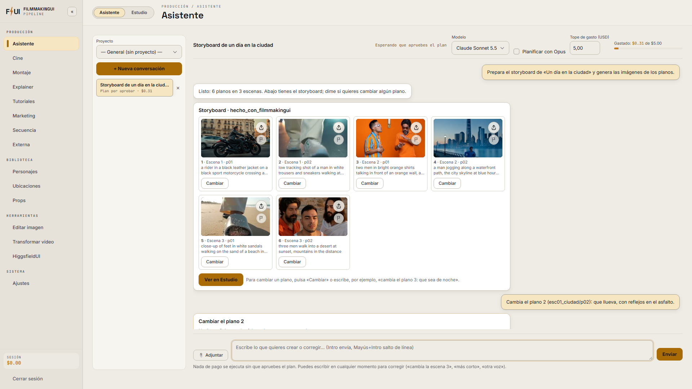
Hecho con FilmmakingUI
Imágenes y vídeos reales generados con la app (sin retoques).
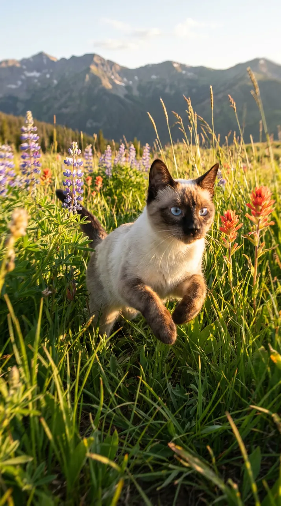
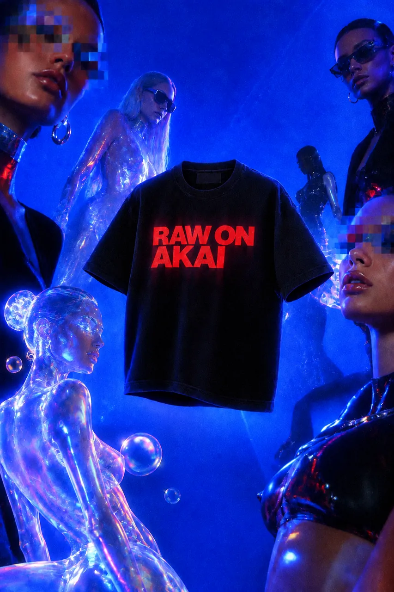
Qué es
Asistente
Pide lo que quieres en el chat. Propone un plan con el coste de cada paso, espera tu aprobación y lo hace; ves el storyboard y cambias un plano sin salir de la conversación.
Cine
Proyectos con escenas y planos. Pega un guion y conviértelo en un storyboard fiel a lo que pides; genera, regenera, anima y pon voz a cada plano.
Biblioteca de personajes
Personajes, ubicaciones y props reutilizables en todos los planos. La continuidad depende del modelo y de tus referencias.
Montaje
Editor de vídeo integrado: línea de tiempo, texto, transiciones y música, y un editor con IA que monta por ti.
Explainer y Tutoriales
Vídeos explicativos narrados y tutoriales con presentador, del tema al montaje final.
Secuencia
Vídeos largos que parecen una sola toma, por fotogramas clave aprobados uno a uno.
Editar imagen y vídeo
Edición de imagen con referencias; en vídeo, motion control, reemplazar personaje y lip-sync.
Marketing
Product shots, producto animado y vídeos UGC verticales a partir de tus productos.
Estimaciones de coste
El consumo de IA lo cobra cada proveedor (BYOK). La estimación, si aparece, es orientativa; la factura real es la de cada proveedor.
Tu motor de IA
Los textos (Asistente, storyboards, guiones) los escribe Claude: con tu key de Anthropic o a través de fal.
Desde el móvil
Abre tu estudio desde el móvil con una dirección segura propia (opcional).
Español e inglés, claro u oscuro
Interfaz, tutoriales y ayuda en los dos idiomas, con tema claro, oscuro o automático.
Así se ve
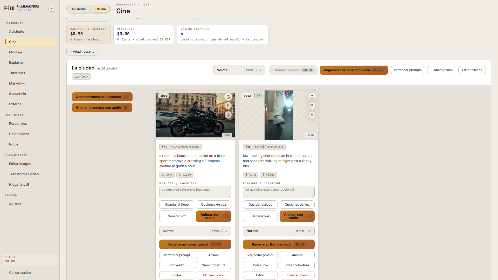
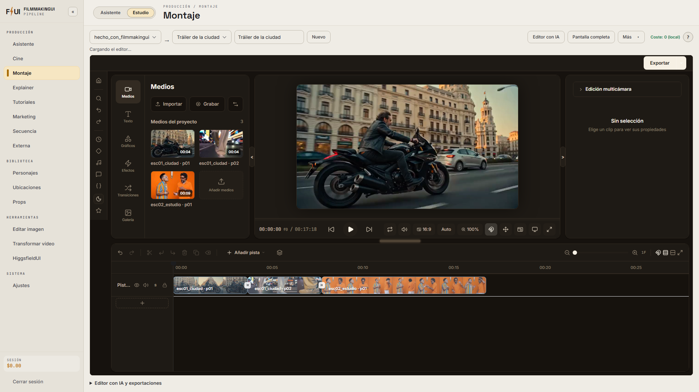
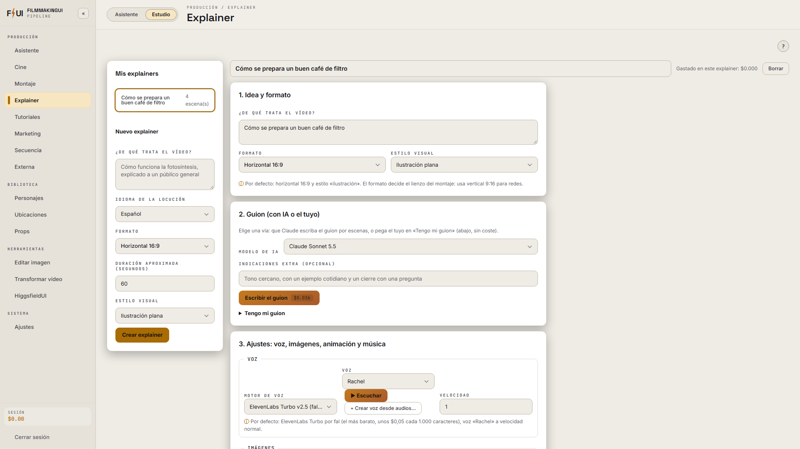
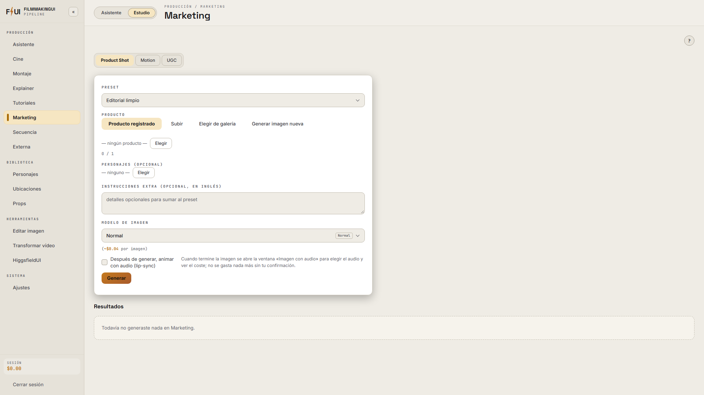
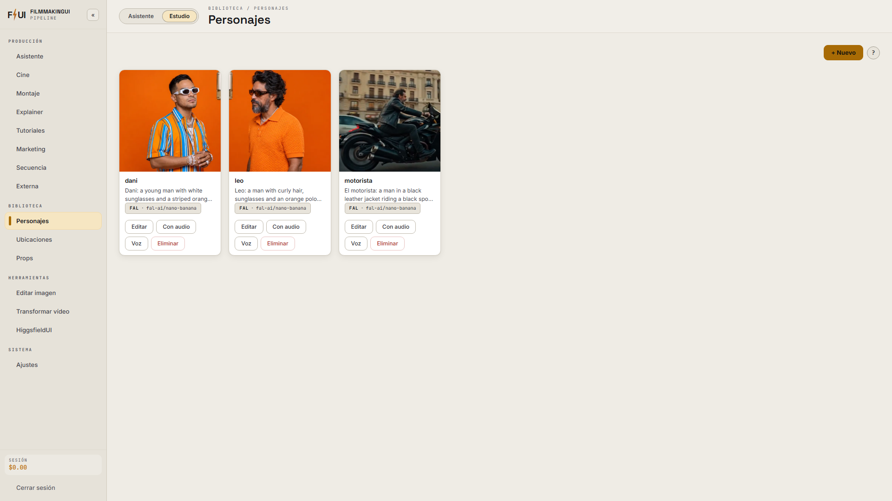
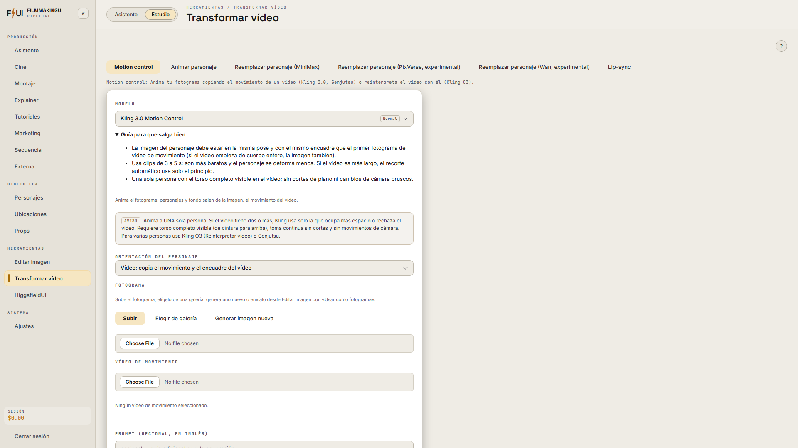
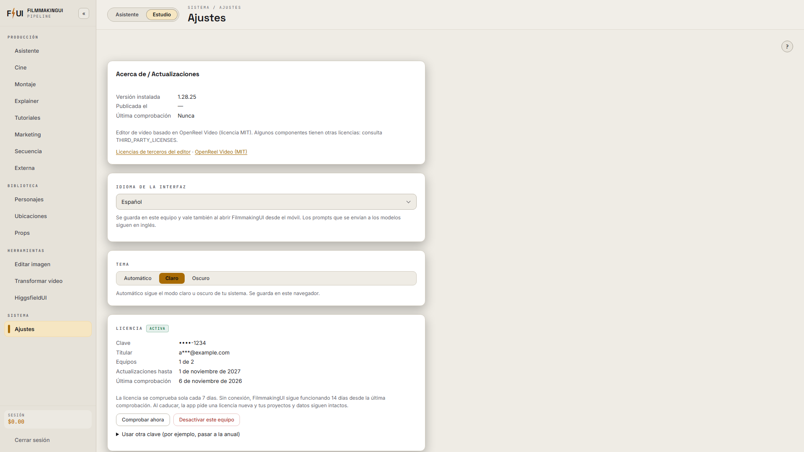
La demo funciona en el navegador, sin descargar nada y sin generar nada: sirve para ver cómo es la app antes de comprar.
Trae tu propia key (BYOK)
FilmmakingUI no revende créditos. Te conectas con tus propias cuentas de los proveedores de IA (fal.ai y, si quieres, Anthropic, ElevenLabs, Higgsfield o ByteDance) y cada uno te cobra directamente lo que generas, a su precio, sin márgenes. Ese gasto es aparte de la licencia.
Los botones que gastan muestran, cuando hay un precio previo, una estimación orientativa del importe, piden confirmación según el umbral que tú fijes en Ajustes y se desactivan mientras envían. La factura real es la de cada proveedor, y nada se genera sin que lo pidas.
Tus keys se guardan cifradas solo en tu ordenador. Tus proyectos, imágenes y vídeos también: no pasan por nuestros servidores.
Solo necesitas la key de fal.ai: con ella generas imágenes, vídeo y voz, y Claude escribe los textos (motor «Claude por fal», el de por defecto). Anthropic, ElevenLabs, Higgsfield y ByteDance son opcionales. La bienvenida del primer arranque te guía paso a paso para crear la key de fal y probarla antes de empezar.
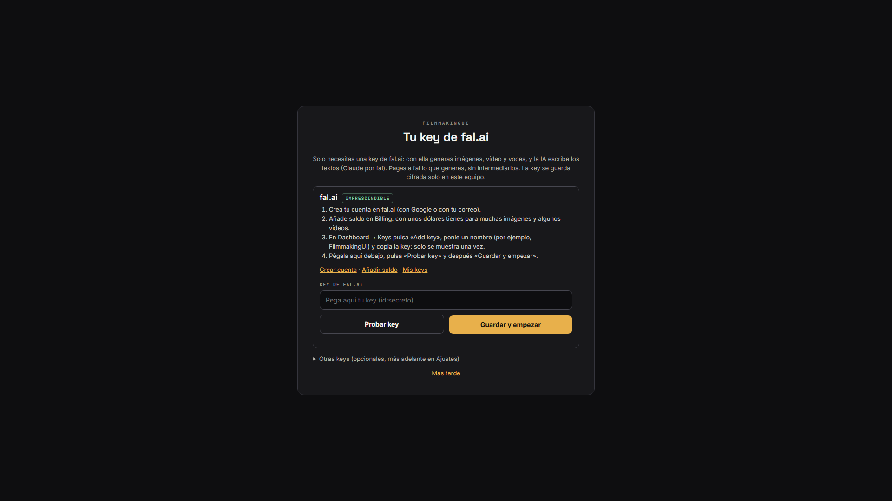
Requisitos
- Windows 10 u 11 de 64 bits. Es el sistema con el que se prueba y se da soporte.
- Mac (Apple Silicon o Intel): en preparación. Avisaremos en esta página cuando esté disponible.
- Conexión a internet para generar (las generaciones se hacen en los proveedores de IA) y para comprobar la licencia.
- Una cuenta de fal.ai con saldo (BYOK). Opcional: Higgsfield, ByteDance, Anthropic, ElevenLabs.
Instrucciones de descarga e instalación · Instalar en Windows · Ayuda completa
Precios
Prueba gratis 7 días
Descarga FilmmakingUI y pulsa «Empezar prueba gratis de 7 días»: todas las funciones, sin tarjeta ni pago y sin pedirte el correo. Una prueba por equipo. Cuando termine, eliges un plan y sigues con tus proyectos.
Descuento
Primer mes
9,99 € / 30 días
- Todas las funciones
- Hasta 2 equipos
- Pago único por 30 días; no se renueva solo
- Precio de bienvenida: después, 14,99 € al mes
- Una sola vez por persona y equipo
Mensual
14,99 € / 30 días
- Todas las funciones
- Hasta 2 equipos
- Pago único por 30 días; renovación manual: lo compras cada mes que lo necesites
- Si lo activas antes de que acabe tu mes, los días se suman
La mejor opción
Anual
99,99 € / 1 año
Equivale a 8,33 €/mes
- Todas las funciones
- Hasta 2 equipos
- Pago único por 1 año; renovación manual
- Actualizaciones durante todo el año
- Si vienes del Primer mes o del Mensual, los días que te queden se suman
¿Cambias de plan? Los días que te queden se suman: activa la clave nueva en el mismo equipo y empieza a contar cuando acaben.
Sin renovación automática: no se cobra nada cuando caduca. Impuestos según tu país, calculados al pagar. Tus proyectos son tuyos y siguen en tu ordenador aunque la licencia caduque. Al pagar, Payhip te entrega un archivo TXT (2 KB) con tu clave de licencia: la pegas en la app y pulsas «Activar».
Acceso anticipado: la app ya funciona de principio a fin y recibe mejoras cada semana. Puede tener algún fallo; si encuentras uno, escríbenos a soporte@filmmakingui.com y lo arreglamos.
Preguntas frecuentes
¿Qué significa «Acceso anticipado»?
Que FilmmakingUI ya se puede usar entero (del guion al vídeo terminado) y que sigue creciendo: hay actualizaciones frecuentes, incluidas en tu licencia. Puede quedar algún fallo; si das con uno, escríbenos y lo arreglamos en la siguiente versión.
¿Cuánto cuesta generar?
Lo que cobre cada proveedor, aparte de la licencia. Cuando hay un precio previo, la app muestra una estimación orientativa antes de enviar la acción (no siempre existe); por ejemplo, una imagen suele costar céntimos y un vídeo de 5 s, desde unos céntimos hasta un par de dólares según el modelo.
¿Puedo probarlo antes de comprar?
Sí: la app trae una prueba gratis de 7 días de la licencia, con todas las funciones, sin tarjeta ni pago (una por equipo). No incluye generaciones con IA: eso lo cobra cada proveedor con tus keys. Y la demo online no necesita descarga.
¿Es una suscripción?
No. Cada compra es un pago único: el primer mes (9,99 €), un mes (14,99 €) o el año (99,99 €). No se renueva sola ni se cobra nada más: cuando caduca, la app te ofrece el Mensual o el Anual y tus proyectos siguen intactos.
¿Puedo repetir el primer mes?
No: el primer mes con descuento (9,99 €) es de una sola vez por persona y equipo. Después puedes seguir con el Mensual (14,99 €) cuando lo necesites o con el Anual (99,99 €, equivale a 8,33 €/mes).
¿Qué pasa cuando termina la prueba o caduca la licencia?
La app muestra la pantalla de licencia con los planes (el Primer mes solo si nunca has pagado; el Mensual y el Anual, siempre). Tus proyectos, imágenes, vídeos y keys no se tocan: al activar una licencia todo vuelve.
¿Qué pasa con mis días si cambio de plan?
No se pierden: se suman. Si pasas del Primer mes o del Mensual al Anual (o renuevas el Mensual) y activas la clave nueva en el mismo equipo, la licencia nueva empieza a contar cuando acaben los días que te quedaban. Por ejemplo, con 10 días pendientes del Primer mes, el Anual te dura 365 + 10 días.
¿Necesito internet?
Para generar, sí. La licencia se comprueba cada 7 días y funciona 14 días sin conexión.
¿Mis imágenes se suben a vuestros servidores?
No. Todo se guarda en tu ordenador; solo viaja al proveedor de IA que elijas cuando generas.
Windows dice «Windows protegió su PC»
Es normal en programas nuevos: «Más información» → «Ejecutar de todas formas». Si tienes Smart App Control, usa la versión portable (ver la página de descarga).
¿Y si no me funciona?
Mira la política de reembolsos: si no funciona en tu equipo y el soporte no lo resuelve, se devuelve.
Cursos — próximamente
Estamos preparando cursos para sacarle partido a FilmmakingUI: del guion al corto, anuncios con producto y personajes coherentes. Déjanos tu correo y te avisamos cuando abramos; solo escribiremos para eso.